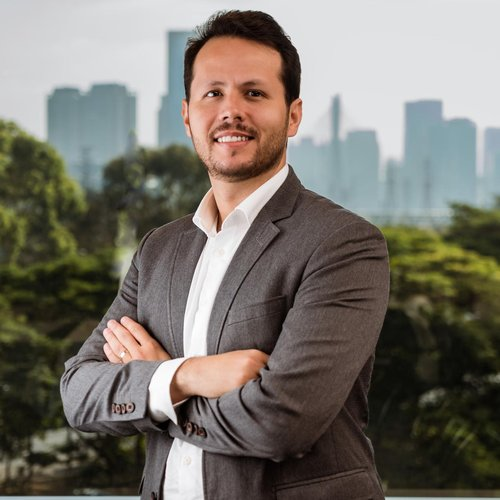
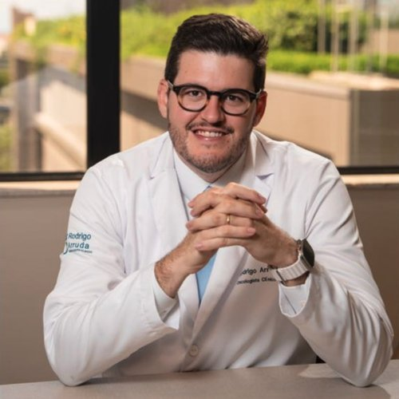

O Instituto Santa Joana Recife de Ensino e Pesquisa (ISEP), na condição de promotor do evento, realiza a quarta edição do simpósio dedicado aos tumores do trato gastrointestinal — dois dias de atualização, discussão de casos e troca de experiências entre especialistas.
A programação percorre todo o espectro da doença: esôfago e estômago, pâncreas, carcinoma hepatocelular, câncer colorretal, câncer de reto, metástases hepáticas e vias biliares — sempre da decisão multidisciplinar ao caso clínico real.
Público-alvo: oncologistas clínicos, cirurgiões oncológicos e do aparelho digestivo, coloproctologistas, gastroenterologistas e hepatologistas, patologistas, radiologistas, radioncologistas, médicos nucleares, endocrinologistas, nutricionistas, nutrólogos e enfermeiros.
Para o IV Simpósio de Oncologia Gastrointestinal
A construção científica do simpósio é conduzida por um time multidisciplinar de especialistas em oncologia do trato gastrointestinal.





Programação preliminar — sujeita a alterações. Os nomes ainda em definição aparecem como “a definir”.
| Horário | Atividade | Palestrante |
|---|---|---|
| 08:00 | ABERTURA | |
| Mesa 1Multidisciplinaridade em tumores Gastrointestinais | ||
| 08:15 – 08:25 10 min | Sarcopenia e caquexia, da triagem ao plano nutricional | Marcella CamposNutricionista |
| 08:25 – 08:35 10 min | Câncer, metabolismo e novas drogas: obesidade, diabetes e GLP-1 no paciente oncológico | Thaís GelenskeEndocrinologista |
| 08:35 – 08:45 10 min | A importância da atividade física no tratamento oncológico | Paulo CarvalhoPreparador Físico |
| 08:45 – 08:55 10 min | Navegação em tumores GI: barreiras, adesão e continuidade do cuidado | DéboraEnfermeira |
| 08:55 – 09:05 10 min | Microbioma no câncer GI: evidência atual e limites para aplicação clínica | Cristiana TavaresOncologista |
| 09:05 – 09:20 15 min | Discussão | |
| Mesa 2Esôfago e Estômago — Doença Localizada | ||
| 09:30 – 09:40 10 min | Biomarcadores no câncer gástrico: quais resultados podem mudar a estratégia? | Gustavo FerreiraPatologista |
| 09:40 – 09:50 10 min | Cirurgia ou preservação de órgão no CEC de esôfago: seleção, vigilância e resgate | Flávio FernandesCirurgião Abdominal |
| 09:50 – 10:00 10 min | Imunoterapia no câncer gástrico e de junção ressecável: evidências e seleção de pacientes | Nildevande FirminoOncologista Clínico |
| 10:00 – 10:15 15 min | Discussão | |
| 10:15 – 10:30 15 min | Caso Clínico: neoplasia da junção esofagogástrica e do estômago — doença localizada | Ilka RochaOncologista |
| 10:30 – 10:50 20 min | COFFEE BREAK | |
| Mesa 3Câncer Gástrico Avançado | ||
| 11:00 – 11:10 10 min | Primeira linha de CG metastático: como os biomarcadores definem o tratamento? | Francisco AmbrósioOncologista |
| 11:10 – 11:20 10 min | Adenocarcinoma gástrico avançado CPS <10 e Claudina 18.2 +: Eu faço QT+Imuno | Ilan PedrosaOncologista |
| 11:20 – 11:30 10 min | Adenocarcinoma gástrico avançado CPS <10 e Claudina 18.2 +: Eu faço QT+Zolbetuximabe | Antônio DouglasOncologista |
| 11:30 – 11:40 10 min | Cirurgia na doença metastática: quem selecionar, com qual objetivo e quais limites? | Tiago IwanagaCirurgião |
| 11:40 – 11:55 15 min | Discussão | |
| 12:00 – 13:30 1 hora e 30 min | ALMOÇO | |
| Mesa 4Tumores câncer de pâncreas | ||
| 13:30 – 13:40 10 min | Ressecabilidade no câncer de pâncreas: além da anatomia, quem é candidato à cirurgia? | Roberto Lustosa |
| 13:40 – 13:50 10 min | Insuficiência pancreática pós-cirúrgica: como manejar | Gustavo LimaGastroenterologista |
| 13:50 – 14:00 10 min | Caso Clínico — cirurgia inicial ou neoadjuvância: como escolher a estratégia e quando operar? | Diogo SalesOncologista Clínico |
| 14:00 – 14:15 15 min | Discussão | |
| 14:15 – 15:00 45 min | Simpósio Satélite — Servier Pedro UsonOncologista | |
| 15:00 – 15:20 20 min | COFFEE BREAK | |
| 15:20 – 16:05 45 min | Simpósio Satélite — AstraZeneca Tibério MedeirosGastro Hepatologista | |
| 16:05 – 16:35 30 min | Simpósio Satélite — Bristol (HCC) Gustavo FernandesOncologista | |
| Mesa 5Carcinoma Hepatocelular | ||
| 16:45 – 16:55 10 min | Carcinoma hepatocelular BCLC A: eu indico tratamentos ablativos — para quem e por quê? | Carlos AbathCirurgião Vascular |
| 16:55 – 17:05 10 min | Carcinoma hepatocelular BCLC A: eu indico cirurgia — para quem e por quê? | Olival LucenaCirurgião |
| 17:05 – 17:15 10 min | Discussão | |
| 17:15 – 17:45 30 min | Simpósio Satélite — Roche Antônio DouglasOncologista | |
| 17:45 – 17:55 10 min | Transplante hepático após imunoterapia no carcinoma hepatocelular: seleção de pacientes, riscos e benefícios | Lilian Rose GomesHepatologista |
| 17:55 – 18:05 10 min | Discussão | |
| Horário | Atividade | Palestrante |
|---|---|---|
| Mesa 6Câncer colorretal – diagnóstico e patologia | ||
| 08:30 – 08:40 10 min | Cólon localmente avançado: cirurgia inicial ou neoadjuvância? | Joyce CavalcantiColoproctologista |
| 08:40 – 08:50 10 min | Imunoterapia no câncer de cólon: onde se encaixa em cada estágio? | Luis Felipe CarvalhoOncologista |
| 08:50 – 09:00 10 min | Alvos moleculares no câncer colorretal: do resultado do teste à escolha terapêutica | A definir |
| 09:00 – 09:15 15 min | Discussão | |
| 09:15 – 09:45 30 min | Simpósio Satélite — Daiichi Rodrigo ArrudaOncologista | |
| Mesa 7Câncer de reto | ||
| 09:55 – 10:05 10 min | Impacto da radiologia na avaliação de resposta ao tratamento | Ítalo CruzRadiologista |
| 10:05 – 10:15 10 min | Terapia neoadjuvante e imunoterapia — Como estamos? | Thiago ApolinárioOncologista |
| 10:15 – 10:25 10 min | Seguimento do paciente após Watch and Wait: como conduzir? | Samara DuarteColoproctologista |
| 10:25 – 10:35 10 min | Ressecção multivisceral no câncer de reto: indicações e limites | A definir |
| 10:35 – 10:50 15 min | Discussão | |
| 10:50 – 11:10 20 min | COFFEE BREAK | |
| Mesa 8Metástase hepáticas e câncer de vias biliares | ||
| 11:20 – 11:30 10 min | Atualização em colangiocarcinoma: imunoterapia e oncodrivers | Eduardo InojosaOncologista |
| 11:30 – 11:40 10 min | Preservação de parênquima hepático nas cirurgias para metástases hepáticas — o que há de novo | Simone FumolaroCirurgião HepatobiliarOnline |
| 11:40 – 11:50 10 min | Estratégias não cirúrgicas no tratamento local metástases hepáticas | João Paulo AyubRadiologista |
| 11:50 – 12:05 15 min | Discussão | |
| 12:05 – 12:25 20 min | Conferência — Transplante Hepático Robótico: a Nova Fronteira da Cirurgia Minimamente Invasiva? | Rafael FontolanCirurgião |
| 12:30 | ENCERRAMENTO | |
Busque pelo nome ou filtre por especialidade. Toque em um convidado para ver o currículo.
Nenhum palestrante encontrado para essa busca.
O IV Simpósio de Oncologia Gastrointestinal acontece no JCPM Trade Center, no Pina — um dos principais centros empresariais do Recife, à beira-mar e com fácil acesso a hotéis, restaurantes e ao aeroporto internacional dos Guararapes.
Endereço:
JCPM Trade Center — Av. Engenheiro Antônio de Góes, 60
Pina — Recife/PE — CEP 51.010-000
Data: 16 e 17 de outubro de 2026
Horário: sexta, 08h às 18h · sábado, 08h30 às 12h30
As inscrições para o IV Simpósio de Oncologia Gastrointestinal estão abertas. A participação é gratuita, com vagas limitadas, e deve ser feita pelo Sympla.
Garanta sua vaga. Após a inscrição, acompanhe a programação neste site.
Os patrocinadores desta edição serão divulgados em breve.
Para dúvidas sobre o simpósio, inscrições ou patrocínio, fale com a organização:
Endereço:
Rua João Eugênio de Lima, 143 – Sala 01
Boa Viagem – Recife/PE – CEP 51.030-360
Telefone/WhatsApp:
(81) 99985-1712
·
(81) 99232-5922
E-mail:
eventos@lukaplan.com.br
Promoção: Instituto Santa Joana Recife de Ensino e Pesquisa (ISEP), Hospital Santa Joana Recife e Rede Américas.
Organização: Luka Plan Promoções e Eventos.
A programação é preliminar e pode sofrer ajustes até a data do evento. As inscrições são gratuitas e limitadas, pelo Sympla.